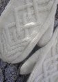

|
||
Premium Patterns Wintry Mix Mitts Love Bytes HawkeyeFree Patterns Kiddie Cadet Summerlin Ruffled Scarf Seamless DS Sock Simply Seamless Pouch Myriads of MushroomsExtras DIY Mitten Blocker Felt Patch Tutorial Yarn Dyeing Tutorial Needle Pouches Knitting Journal |
March 31, 2008 - Posted by Alice SchneblyNatural BeautyProject Specs Here’s one more Malabrigo March FO… Chevalier Mittens! I am really proud of these because although I’ve made quite a few mittens before, none have been from such an intricate chart or with so many cables. At first I was very intimidated by the chart, but after enlarging it and looking it over it really made sense. The cable symbols were very easy to understand just by the symbol which was a big plus. I found it easiest if I used a post-it note to keep track of my place. I moved it up to reveal two rows at a time so that I could see the above row while knitting the cables to work knit and purl stitches accordingly. Like Grace did I purled the stitches in the cables when the above stitches in the chart were purled as well. It really made crisp cables that pop off the background. I spent a long time choosing a colorway to knit these in. I was originally thinking Lettuce or Velvet Grapes, but I finally decided on Natural. I have always loved creamy white cables and I really thought this color would highlight the pattern perfectly. I love how cozy and soft they are, and the Natural Malabrigo seems even more cushy that the other colors I’ve used. The pattern and yarn are fantastic together, but what really put me over the top in love with these mittens was how they looked after washing. Before they were nice, but the stitches were a little too distinct and rigid. After a thirty minute soak in luke warm water and some wool wash they were transformed. The cables really came together, puffed up a bit, and all around looked so much better. I am always amazed how a good soak can transform a project from good to down right heavenly. After the Koolhaas fiasco, I opted to use a cable needle for these mittens. It went surprisingly faster than I had expected and I really got into a rhythm. I know many people have cabled without a cable needle with Malabrigo with no problems, but I think for me it just isn’t the right technique when it comes to this yarn. I am really happy I didn’t give up on cabling with Malabrigo, because I don’t think I would have ended up with the same luscious mittens that I have now! I am sad that Malabrigo March is coming to an end, though I am excited because I really accomplished a lot this month. I blew away my monthly goal of five FOs by completing a total of twelve wonderful items, all of which I really love! I can say now that Malabrigo will definitely be one of my new go-to yarns for all sorts of projects. There are still so many things I’m dying to make from this yarn. I already think next Malabrigo March will be even crazier and I can’t wait! Don’t worry, if you’re as sad as I am to see this month come to a close, Grace has one more Malabrigo knit to show off to you tomorrow. |
   Recent ReviewsRecent Posts
 Our Favorites
|
| © 2007 KathrynIvy.com | ||
{kind=link}
{kind=link}